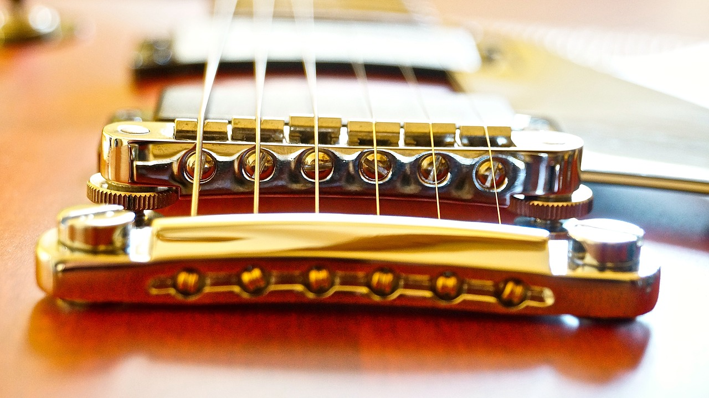

기타연주 기타라는 악기는 어렸을때부터 알고있었지만 본격적으로 연주하기 시작한건 대학교 밴드 동아리부터 였죠~ 밴드 동아리에 들어간 계기는 고등학교때 본조비 라는 밴드를 시작으로 건즈앤로지스 라는 밴드를 무척 좋아하게 되었습니다. 그중에서도 건즈의 슬래쉬라는 기타리스트의 연주에 한껏 매료되어 지금까지도 가끔 연습해보기도 합니다. 물론 예전만큼의 열정은 없지만요 ㅋㅋ